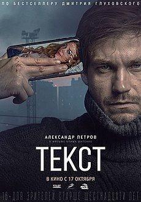

Практическая 2 задание 1
Четырёхкратный лауреат премии «Золотой орёл» (2020): за «Лучший игровой фильм», «Лучшую мужскую роль в кино» (Александр Петров), «Лучшую мужскую роль второго плана» (Иван Янковский) и «Лучший монтаж фильма» (Тим Павелко). Лауреат премии Ассоциации продюсеров кино и телевидения (2020) за «Лучший полнометражный фильм»[9]. Номинант на премию «Ника» (2020) в категории «Лучшая сценарная работа» (Дмитрий Глуховский).

+7(814)-233-22-11